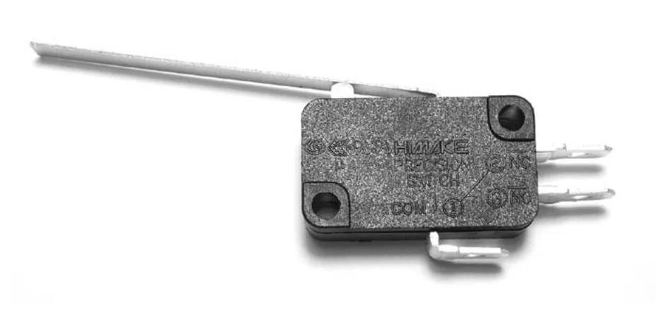
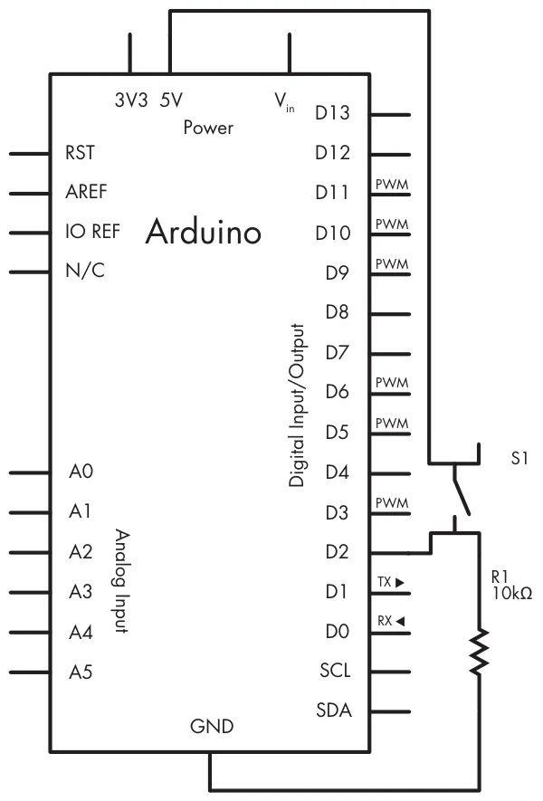

A microswitch can act like the simple push button we used in Chapter 4, but the microswitch component is physically larger and includes a large metal bar that serves as the actuator (see Figure 12-21).

When using the microswitch, you connect one wire to the bottom contact and the other to the contact labeled “NO” (normally open) to ensure that current flows only when the bar is pressed. We’ll mount the microswitch on the front of our tank, and when the tank hits an object, the bar will be pressed, causing current to flow and making the tank reverse direction or take another action.
The Schematic
The microswitch hardware is wired like a single push button, as shown in Figure 12-22.

The Sketch
We connect the microswitch to an interrupts port (digital pin 2). Although you might think we should have a function called by the interrupt to make the tank reverse for a few moments, that’s not possible, because the delay() function doesn’t operate inside functions called by interrupts. We have to think a little differently in this case.
Instead, the function goForward() will turn on the motors if two conditions are met for the variables crash and the Boolean move. If crash is true, the motors will reverse at a slower speed for 2 seconds to “back out” from a collision situation.
We can’t use delay() functions because of the interrupt, so we measure the amount of time that the motors run reading millis() at the start and compare that against the current value of millis(). When the difference is greater than or equal to the required duration, move is set to false and the motors stop.
Enter and upload the following sketch:
// Project 41 – Detecting Tank Bot Collisions with a Microswitch
int m1speed=6; // digital pins for speed control
int m2speed=5;
int m1direction=7; // digital pins for direction control
int m2direction=4;
boolean crash=false;
void setup()
{
pinMode(m1direction, OUTPUT);
pinMode(m2direction, OUTPUT);
attachInterrupt(0, backOut, RISING);
delay(5000);
}
❶ void backOut()
{
crash=true;
}
❷ void backUp()
{
digitalWrite(m1direction,LOW); // reverse
digitalWrite(m2direction,LOW); // reverse
analogWrite(m1speed, 200); // speed
analogWrite(m2speed, 200);
delay(2000);
analogWrite(m1speed, 0); // speed
analogWrite(m2speed, 0);
}
void goForward(int duration, int pwm)
{
long a,b;
boolean move=true;
❸ a=millis();
do
{
if (crash==false)
{
digitalWrite(m1direction,HIGH); // forward
digitalWrite(m2direction,HIGH); // forward
analogWrite(m1speed, pwm); // speed
analogWrite(m2speed, pwm);
}
if (crash==true)
{
backUp();
crash=false;
}
❹ b=millis()-a;
if (b>=duration)
{
move=false;
}
} while (move!=false);
// stop motors
analogWrite(m1speed, 0);
analogWrite(m2speed, 0);
}
void loop()
{
goForward(5000, 255);
delay(2000);
}This sketch uses an advanced method of moving forward, in that two variables are used to monitor movement while the tank bot is in motion. The first is the Boolean variable crash. If the tank bot bumps into something and activates the microswitch, then an interrupt is called, which runs the function backOut() at ❶. It is here that the variable crash is changed from false to true. The second variable that is monitored is the Boolean variable move. In the function goForward(), we use millis() at ❸ to calculate constantly whether the tank bot has finished moving for the required period of time (set by the parameter duration).
At ❹, the function calculates whether the elapsed time is less than the required time, and if so, the variable move is set to true. Therefore, the tank bot is allowed to move forward only if it has not crashed and not run out of time. If a crash has been detected, the function backUp() at ❷ is called, at which point the tank will reverse slowly for 2 seconds and then resume as normal.